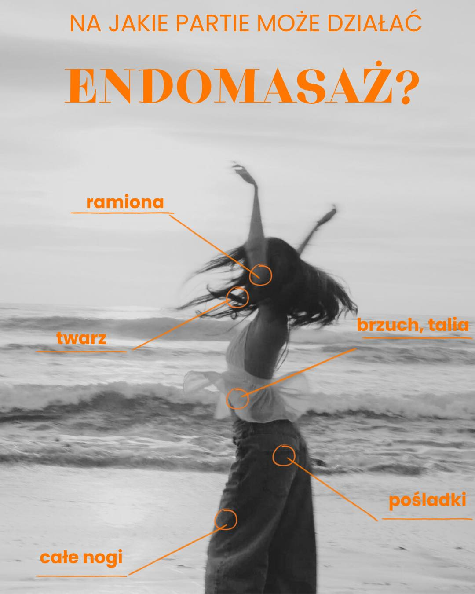

01 - Modelowanie sylwetki
Trening na urządzeniach Studio Figura - efekty bez wysiłku
Pracujemy na sprawdzonych urządzeniach Studio Figura: Roll Shaper, Vacu Shaper, Body Roll, Roll Star. To trening, który wykonuje się leżąc lub siedząc - a Twoja sylwetka pracuje za Ciebie. Idealne rozwiązanie dla osób, które nie lubią siłowni albo mają mało czasu.
Zabiegi pomagają w redukcji obwodów, ujędrnieniu skóry, zmniejszeniu cellulitu i poprawie krążenia. Dla najlepszych efektów zalecamy serię - już po kilku wizytach widać różnicę w lustrze i w pomiarach.
- Roll Shaper - masaż wałkami i redukcja cellulitu
- Vacu Shaper - bieżnia z podciśnieniem na partie ud i pośladków
- Body Roll - intensywny masaż całego ciała
- Roll Star - precyzyjne modelowanie wybranych partii
- Pomiary obwodów i zdjęcia kontrolne przed i po serii
Najczęściej: redukcja obwodów ud i brzucha, walka z cellulitem, ujędrnienie skóry po porodzie lub po zrzuceniu wagi.